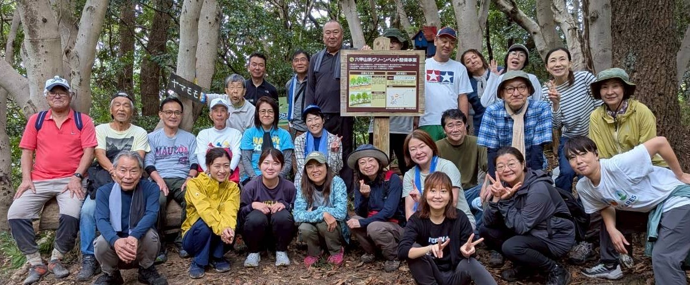

六甲のグリーンベルトを守り、地域の保全を確保する活動です

六甲山の魚屋道沿いの下草を払い、日本由来の樹木を植林する活動を概ね月に1回程度、実施しています。今後の活動スケジュールや活動中の画像をご覧いただけます。メンバー限定のコンテンツも用意しています。

六甲山の魚屋道沿いの下草を払い、日本由来の樹木を植林する活動を概ね月に1回程度、実施しています。今後の活動スケジュールや活動中の画像をご覧いただけます。メンバー限定のコンテンツも用意しています。